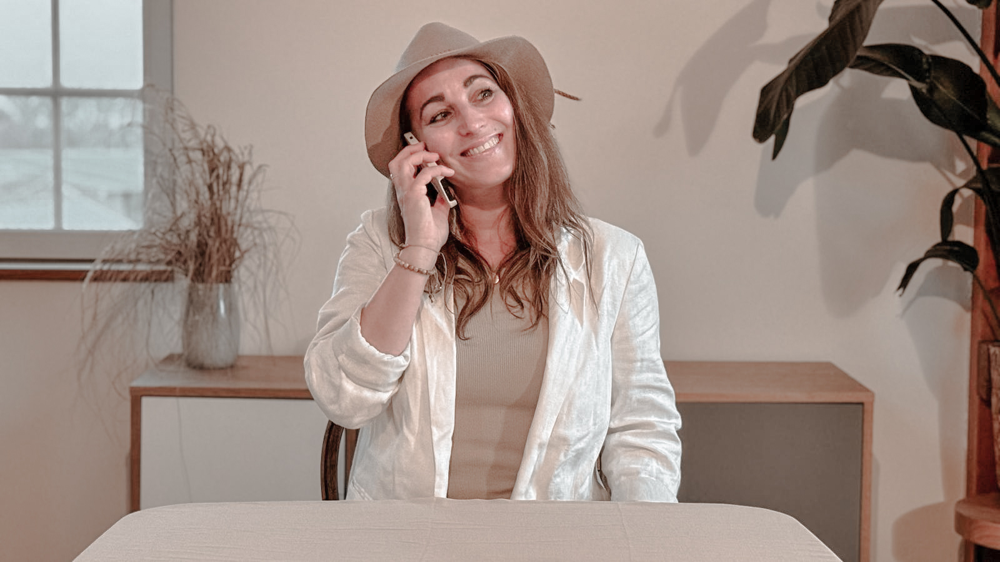

Starke Zielgruppenbeziehung: Sprache & Inhalte für kommunikationssensible
Berufe
Jetzt kostenlosen Zoom-Call vereinbaren und
gemeinsam durchstarten!
Bist du bereit, dich mit deiner
Zielgruppe
zu verbinden – authentisch und langfristig?

Moin, ich bin Lisa, Conscious Communication Coach und Beraterin aus Hamburg.
Nach über 18 Jahren in den Medien, Public Relations und im Marketing weiß ich: Die Beziehung zwischen Sender und Empfänger entscheidet, ob und wie eine Botschaft ankommt. Damit das gelingt, brauchen vor allem sensible Themen, Branchen und Berufe, wie Gesundheitswesen, Coaching, Beratung, Bildung, Finanzwesen und IT, eine bewusste Sprache und Kommunikation.
Meine Mission: Ich helfe dir dabei, dich klar als Expert:In in deiner sensiblen Nische auszurichten und eine starke Verbindung zu deiner Zielgruppe aufzubauen, aus der heraus sich langfristige, verlässliche und starke Beziehungen entwickeln lassen.
Das sagen meine Kunden über meine Arbeit:
<
>